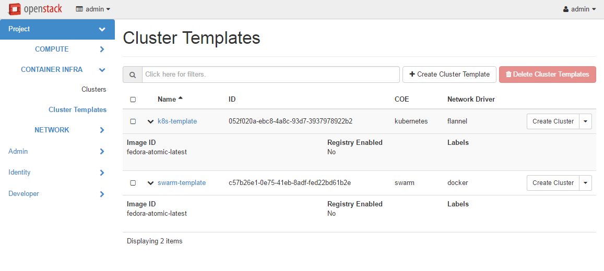
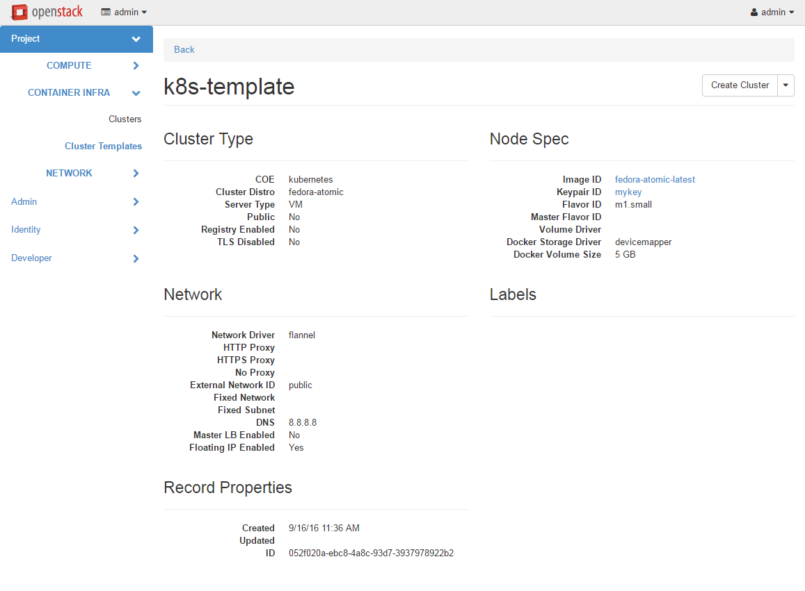
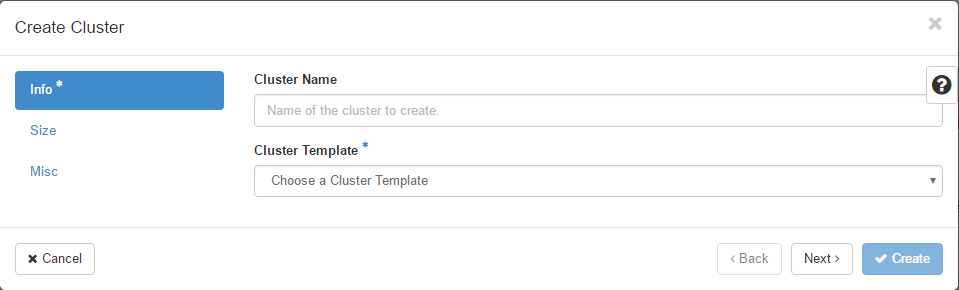

Magnum User Guide¶
This guide is intended for users who use Magnum to deploy and manage clusters of hosts for a Container Orchestration Engine. It describes the infrastructure that Magnum creates and how to work with them.
Section 1-3 describe Magnum itself, including an overview, the CLI and Horizon interface. Section 4-9 describe the Container Orchestration Engine (COE) supported along with a guide on how to select one that best meets your needs and how to develop a driver for a new COE. Section 10-15 describe the low level OpenStack infrastructure that is created and managed by Magnum to support the COE’s.
Contents¶
Terminology¶
- Cluster (previously Bay)
- A cluster is the construct in which Magnum launches container orchestration engines. After a cluster has been created the user is able to add containers to it either directly, or in the case of the Kubernetes container orchestration engine within pods - a logical construct specific to that implementation. A cluster is created based on a ClusterTemplate.
- ClusterTemplate (previously BayModel)
- A ClusterTemplate in Magnum is roughly equivalent to a flavor in Nova. It acts as a template that defines options such as the container orchestration engine, keypair and image for use when Magnum is creating clusters using the given ClusterTemplate.
- Container Orchestration Engine (COE)
- A container orchestration engine manages the lifecycle of one or more containers, logically represented in Magnum as a cluster. Magnum supports a number of container orchestration engines, each with their own pros and cons, including Docker Swarm, Kubernetes, and Mesos.
ClusterTemplate¶
A ClusterTemplate (previously known as BayModel) is a collection of parameters to describe how a cluster can be constructed. Some parameters are relevant to the infrastructure of the cluster, while others are for the particular COE. In a typical workflow, a user would create a ClusterTemplate, then create one or more clusters using the ClusterTemplate. A cloud provider can also define a number of ClusterTemplates and provide them to the users. A ClusterTemplate cannot be updated or deleted if a cluster using this ClusterTemplate still exists.
The definition and usage of the parameters of a ClusterTemplate are as follows. They are loosely grouped as: mandatory, infrastructure, COE specific.
- –coe <coe>
- Specify the Container Orchestration Engine to use. Supported COE’s include ‘kubernetes’, ‘swarm’, ‘mesos’. If your environment has additional cluster drivers installed, refer to the cluster driver documentation for the new COE names. This is a mandatory parameter and there is no default value.
- –image <image>
The name or UUID of the base image in Glance to boot the servers for the cluster. The image must have the attribute ‘os-distro’ defined as appropriate for the cluster driver. For the currently supported images, the os-distro names are:
COE os-distro Kubernetes Fedora-atomic, CoreOS Swarm Fedora-atomic Mesos Ubuntu This is a mandatory parameter and there is no default value.
- –keypair <keypair>
- The name or UUID of the SSH keypair to configure in the cluster servers for ssh access. You will need the key to be able to ssh to the servers in the cluster. The login name is specific to the cluster driver. If keypair is not provided in template it will be required at Cluster create. This value will be overridden by any keypair value that is provided during Cluster create.
- –external-network <external-network>
- The name or network ID of a Neutron network to provide connectivity to the external internet for the cluster. This network must be an external network, i.e. its attribute ‘router:external’ must be ‘True’. The servers in the cluster will be connected to a private network and Magnum will create a router between this private network and the external network. This will allow the servers to download images, access discovery service, etc, and the containers to install packages, etc. In the opposite direction, floating IP’s will be allocated from the external network to provide access from the external internet to servers and the container services hosted in the cluster. This is a mandatory parameter and there is no default value.
- –name <name>
- Name of the ClusterTemplate to create. The name does not have to be unique. If multiple ClusterTemplates have the same name, you will need to use the UUID to select the ClusterTemplate when creating a cluster or updating, deleting a ClusterTemplate. If a name is not specified, a random name will be generated using a string and a number, for example “pi-13-model”.
| --public | Access to a ClusterTemplate is normally limited to the admin, owner or users within the same tenant as the owners. Setting this flag makes the ClusterTemplate public and accessible by other users. The default is not public. |
- –server-type <server-type>
- The servers in the cluster can be VM or baremetal. This parameter selects the type of server to create for the cluster. The default is ‘vm’. Possible values are ‘vm’, ‘bm’.
- –network-driver <network-driver>
The name of a network driver for providing the networks for the containers. Note that this is different and separate from the Neutron network for the cluster. The operation and networking model are specific to the particular driver; refer to the Networking section for more details. Supported network drivers and the default driver are:
COE Network-Driver Default Kubernetes Flannel Flannel Swarm Docker, Flannel Flannel Mesos Docker Docker - –volume-driver <volume-driver>
The name of a volume driver for managing the persistent storage for the containers. The functionality supported are specific to the driver. Supported volume drivers and the default driver are:
COE Volume-Driver Default Kubernetes Cinder No Driver Swarm Rexray No Driver Mesos Rexray No Driver - –dns-nameserver <dns-nameserver>
- The DNS nameserver for the servers and containers in the cluster to use. This is configured in the private Neutron network for the cluster. The default is ‘8.8.8.8’.
- –flavor <flavor>
- The nova flavor id for booting the node servers. The default is ‘m1.small’.
- –master-flavor <master-flavor>
- The nova flavor id for booting the master or manager servers. The default is ‘m1.small’.
- –http-proxy <http-proxy>
- The IP address for a proxy to use when direct http access from the servers to sites on the external internet is blocked. This may happen in certain countries or enterprises, and the proxy allows the servers and containers to access these sites. The format is a URL including a port number. The default is ‘None’.
- –https-proxy <https-proxy>
- The IP address for a proxy to use when direct https access from the servers to sites on the external internet is blocked. This may happen in certain countries or enterprises, and the proxy allows the servers and containers to access these sites. The format is a URL including a port number. The default is ‘None’.
- –no-proxy <no-proxy>
- When a proxy server is used, some sites should not go through the proxy and should be accessed normally. In this case, you can specify these sites as a comma separated list of IP’s. The default is ‘None’.
- –docker-volume-size <docker-volume-size>
- If specified, container images will be stored in a cinder volume of the specified size in GB. Each cluster node will have a volume attached of the above size. If not specified, images will be stored in the compute instance’s local disk. For the ‘devicemapper’ storage driver, the minimum value is 3GB. For the ‘overlay’ storage driver, the minimum value is 1GB.
- –docker-storage-driver <docker-storage-driver>
- The name of a driver to manage the storage for the images and the container’s writable layer. The supported drivers are ‘devicemapper’ and ‘overlay’. The default is ‘devicemapper’.
- –labels <KEY1=VALUE1,KEY2=VALUE2;KEY3=VALUE3...>
- Arbitrary labels in the form of key=value pairs. The accepted keys and valid values are defined in the cluster drivers. They are used as a way to pass additional parameters that are specific to a cluster driver. Refer to the subsection on labels for a list of the supported key/value pairs and their usage.
| --tls-disabled | Transport Layer Security (TLS) is normally enabled to secure the cluster. In some cases, users may want to disable TLS in the cluster, for instance during development or to troubleshoot certain problems. Specifying this parameter will disable TLS so that users can access the COE endpoints without a certificate. The default is TLS enabled. |
| --registry-enabled | |
| Docker images by default are pulled from the public Docker registry, but in some cases, users may want to use a private registry. This option provides an alternative registry based on the Registry V2: Magnum will create a local registry in the cluster backed by swift to host the images. Refer to Docker Registry 2.0 for more details. The default is to use the public registry. | |
| --master-lb-enabled | |
| Since multiple masters may exist in a bay, a load balancer is created to provide the API endpoint for the bay and to direct requests to the masters. In some cases, such as when the LBaaS service is not available, this option can be set to ‘false’ to create a bay without the load balancer. In this case, one of the masters will serve as the API endpoint. The default is ‘true’, i.e. to create the load balancer for the bay. | |
Labels¶
Labels is a general method to specify supplemental parameters that are specific to certain COE or associated with certain options. Their format is key/value pair and their meaning is interpreted by the drivers that uses them. The drivers do validate the key/value pairs. Their usage is explained in details in the appropriate sections, however, since there are many possible labels, the following table provides a summary to help give a clearer picture. The label keys in the table are linked to more details elsewhere in the user guide.
| label key | label value | default |
|---|---|---|
| flannel_network_cidr | IPv4 CIDR | 10.100.0.0/16 |
| flannel_backend |
|
udp |
| flannel_network_subnetlen | size of subnet to assign to node | 24 |
| rexray_preempt |
|
false |
| mesos_slave_isolation |
|
“” |
| mesos_slave_image_providers |
|
“” |
| mesos_slave_work_dir | (directory name) | “” |
| mesos_slave_executor_env_variables | (file name) | “” |
| swarm_strategy |
|
spread |
| admission_control_list | see below | see below |
Cluster¶
A cluster (previously known as bay) is an instance of the ClusterTemplate of a COE. Magnum deploys a cluster by referring to the attributes defined in the particular ClusterTemplate as well as a few additional parameters for the cluster. Magnum deploys the orchestration templates provided by the cluster driver to create and configure all the necessary infrastructure. When ready, the cluster is a fully operational COE that can host containers.
Infrastructure¶
The infrastructure of the cluster consists of the resources provided by the various OpenStack services. Existing infrastructure, including infrastructure external to OpenStack, can also be used by the cluster, such as DNS, public network, public discovery service, Docker registry. The actual resources created depends on the COE type and the options specified; therefore you need to refer to the cluster driver documentation of the COE for specific details. For instance, the option ‘–master-lb-enabled’ in the ClusterTemplate will cause a load balancer pool along with the health monitor and floating IP to be created. It is important to distinguish resources in the IaaS level from resources in the PaaS level. For instance, the infrastructure networking in OpenStack IaaS is different and separate from the container networking in Kubernetes or Swarm PaaS.
Typical infrastructure includes the following.
- Servers
- The servers host the containers in the cluster and these servers can be VM or bare metal. VM’s are provided by Nova. Since multiple VM’s are hosted on a physical server, the VM’s provide the isolation needed for containers between different tenants running on the same physical server. Bare metal servers are provided by Ironic and are used when peak performance with virtually no overhead is needed for the containers.
- Identity
- Keystone provides the authentication and authorization for managing the cluster infrastructure.
- Network
- Networking among the servers is provided by Neutron. Since COE currently are not multi-tenant, isolation for multi-tenancy on the networking level is done by using a private network for each cluster. As a result, containers belonging to one tenant will not be accessible to containers or servers of another tenant. Other networking resources may also be used, such as load balancer and routers. Networking among containers can be provided by Kuryr if needed.
- Storage
- Cinder provides the block storage that can be used to host the containers and as persistent storage for the containers.
- Security
- Barbican provides the storage of secrets such as certificates used for Transport Layer Security (TLS) within the cluster.
Life cycle¶
The set of life cycle operations on the cluster is one of the key value that Magnum provides, enabling clusters to be managed painlessly on OpenStack. The current operations are the basic CRUD operations, but more advanced operations are under discussion in the community and will be implemented as needed.
NOTE The OpenStack resources created for a cluster are fully accessible to the cluster owner. Care should be taken when modifying or reusing these resources to avoid impacting Magnum operations in unexpected manners. For instance, if you launch your own Nova instance on the bay private network, Magnum would not be aware of this instance. Therefore, the cluster-delete operation will fail because Magnum would not delete the extra Nova instance and the private Neutron network cannot be removed while a Nova instance is still attached.
NOTE Currently Heat nested templates are used to create the resources; therefore if an error occurs, you can troubleshoot through Heat. For more help on Heat stack troubleshooting, refer to the Troubleshooting Guide.
Create¶
NOTE bay-<command> are the deprecated versions of these commands and are still support in current release. They will be removed in a future version. Any references to the term bay will be replaced in the parameters when using the ‘bay’ versions of the commands. For example, in ‘bay-create’ –baymodel is used as the baymodel parameter for this command instead of –cluster-template.
The ‘cluster-create’ command deploys a cluster, for example:
magnum cluster-create --name mycluster \
--cluster-template mytemplate \
--node-count 8 \
--master-count 3
The ‘cluster-create’ operation is asynchronous; therefore you can initiate another ‘cluster-create’ operation while the current cluster is being created. If the cluster fails to be created, the infrastructure created so far may be retained or deleted depending on the particular orchestration engine. As a common practice, a failed cluster is retained during development for troubleshooting, but they are automatically deleted in production. The current cluster drivers use Heat templates and the resources of a failed ‘cluster-create’ are retained.
The definition and usage of the parameters for ‘cluster-create’ are as follows:
- –cluster-template <cluster-template>
- The ID or name of the ClusterTemplate to use. This is a mandatory parameter. Once a ClusterTemplate is used to create a cluster, it cannot be deleted or modified until all clusters that use the ClusterTemplate have been deleted.
- –name <name>
- Name of the cluster to create. If a name is not specified, a random name will be generated using a string and a number, for example “gamma-7-cluster”.
- –keypair <keypair>
- The name or UUID of the SSH keypair to configure in the cluster servers for ssh access. You will need the key to be able to ssh to the servers in the cluster. The login name is specific to the cluster driver. If keypair is not provided it will attempt to use the value in the ClusterTemplate. If the ClusterTemplate is also missing a keypair value then an error will be returned. The keypair value provided here will override the keypair value from the ClusterTemplate.
- –node-count <node-count>
- The number of servers that will serve as node in the cluster. The default is 1.
- –master-count <master-count>
- The number of servers that will serve as master for the cluster. The default is 1. Set to more than 1 master to enable High Availability. If the option ‘–master-lb-enabled’ is specified in the ClusterTemplate, the master servers will be placed in a load balancer pool.
- –discovery-url <discovery-url>
The custom discovery url for node discovery. This is used by the COE to discover the servers that have been created to host the containers. The actual discovery mechanism varies with the COE. In some cases, Magnum fills in the server info in the discovery service. In other cases, if the discovery-url is not specified, Magnum will use the public discovery service at:
https://discovery.etcd.io
In this case, Magnum will generate a unique url here for each cluster and store the info for the servers.
- –timeout <timeout>
- The timeout for cluster creation in minutes. The value expected is a positive integer and the default is 60 minutes. If the timeout is reached during cluster-create, the operation will be aborted and the cluster status will be set to ‘CREATE_FAILED’.
List¶
The ‘cluster-list’ command lists all the clusters that belong to the tenant, for example:
magnum cluster-list
Show¶
The ‘cluster-show’ command prints all the details of a cluster, for example:
magnum cluster-show mycluster
The properties include those not specified by users that have been assigned default values and properties from new resources that have been created for the cluster.
Update¶
A cluster can be modified using the ‘cluster-update’ command, for example:
magnum cluster-update mycluster replace node_count=8
The parameters are positional and their definition and usage are as follows.
- <cluster>
- This is the first parameter, specifying the UUID or name of the cluster to update.
- <op>
- This is the second parameter, specifying the desired change to be made to the cluster attributes. The allowed changes are ‘add’, ‘replace’ and ‘remove’.
- <attribute=value>
This is the third parameter, specifying the targeted attributes in the cluster as a list separated by blank space. To add or replace an attribute, you need to specify the value for the attribute. To remove an attribute, you only need to specify the name of the attribute. Currently the only attribute that can be replaced or removed is ‘node_count’. The attributes ‘name’, ‘master_count’ and ‘discovery_url’ cannot be replaced or delete. The table below summarizes the possible change to a cluster.
Attribute add replace remove node_count no add/remove nodes reset to default of 1 master_count no no no name no no no discovery_url no no no
The ‘cluster-update’ operation cannot be initiated when another operation is in progress.
NOTE: The attribute names in cluster-update are slightly different from the corresponding names in the cluster-create command: the dash ‘-‘ is replaced by an underscore ‘_’. For instance, ‘node-count’ in cluster-create is ‘node_count’ in cluster-update.
Scale¶
Scaling a cluster means adding servers to or removing servers from the cluster. Currently, this is done through the ‘cluster-update’ operation by modifying the node-count attribute, for example:
magnum cluster-update mycluster replace node_count=2
When some nodes are removed, Magnum will attempt to find nodes with no containers to remove. If some nodes with containers must be removed, Magnum will log a warning message.
Delete¶
The ‘cluster-delete’ operation removes the cluster by deleting all resources such as servers, network, storage; for example:
magnum cluster-delete mycluster
The only parameter for the cluster-delete command is the ID or name of the cluster to delete. Multiple clusters can be specified, separated by a blank space.
If the operation fails, there may be some remaining resources that have not been deleted yet. In this case, you can troubleshoot through Heat. If the templates are deleted manually in Heat, you can delete the cluster in Magnum to clean up the cluster from Magnum database.
The ‘cluster-delete’ operation can be initiated when another operation is still in progress.
Python Client¶
Installation¶
Follow the instructions in the OpenStack Installation Guide to enable the repositories for your distribution:
Install using distribution packages for RHEL/CentOS/Fedora:
$ sudo yum install python-magnumclient
Install using distribution packages for Ubuntu/Debian:
$ sudo apt-get install python-magnumclient
Install using distribution packages for OpenSuSE and SuSE Enterprise Linux:
$ sudo zypper install python-magnumclient
Verifying installation¶
Execute the magnum command with the –version argument to confirm that the client is installed and in the system path:
$ magnum --version
1.1.0
Note that the version returned may differ from the above, 1.1.0 was the latest available version at the time of writing.
Using the command-line client¶
Refer to the OpenStack Command-Line Interface Reference for a full list of the commands supported by the magnum command-line client.
Horizon Interface¶
Magnum provides a Horizon plugin so that users can access the Container Infrastructure Management service through the OpenStack browser-based graphical UI. The plugin is available from magnum-ui. It is not installed by default in the standard Horizon service, but you can follow the instruction for installing a Horizon plugin.
In Horizon, the container infrastructure panel is part of the ‘Project’ view and it currently supports the following operations:
- View list of cluster templates
- View details of a cluster template
- Create a cluster template
- Delete a cluster template
- View list of clusters
- View details of a cluster
- Create a cluster
- Delete a cluster
- Get the Certificate Authority for a cluster
- Sign a user key and obtain a signed certificate for accessing the secured COE API endpoint in a cluster.
Other operations are not yet supported and the CLI should be used for these.
Following is the screenshot of the Horizon view showing the list of cluster templates.
Following is the screenshot of the Horizon view showing the details of a cluster template.
Following is the screenshot of the dialog to create a new cluster.
Cluster Drivers¶
A cluster driver is a collection of python code, heat templates, scripts, images, and documents for a particular COE on a particular distro. Magnum presents the concept of ClusterTemplates and clusters. The implementation for a particular cluster type is provided by the cluster driver. In other words, the cluster driver provisions and manages the infrastructure for the COE. Magnum includes default drivers for the following COE and distro pairs:
| COE | distro |
|---|---|
| Kubernetes | Fedora Atomic |
| Kubernetes | CoreOS |
| Swarm | Fedora Atomic |
| Mesos | Ubuntu |
Magnum is designed to accommodate new cluster drivers to support custom COE’s and this section describes how a new cluster driver can be constructed and enabled in Magnum.
Directory structure¶
Magnum expects the components to be organized in the following directory structure under the directory ‘drivers’:
COE_Distro/
image/
templates/
api.py
driver.py
monitor.py
scale.py
template_def.py
version.py
The minimum required components are:
- driver.py
- Python code that implements the controller operations for
the particular COE. The driver must implement:
Currently supported:
cluster_create,cluster_update,cluster_delete. - templates
- A directory of orchestration templates for managing the lifecycle of clusters, including creation, configuration, update, and deletion. Currently only Heat templates are supported, but in the future other orchestration mechanism such as Ansible may be supported.
- template_def.py
- Python code that maps the parameters from the ClusterTemplate to the input parameters for the orchestration and invokes the orchestration in the templates directory.
- version.py
- Tracks the latest version of the driver in this directory.
This is defined by a
versionattribute and is represented in the form of1.0.0. It should also include aDriverattribute with descriptive name such asfedora_swarm_atomic.
The remaining components are optional:
- image
- Instructions for obtaining or building an image suitable for the COE.
- api.py
- Python code to interface with the COE.
- monitor.py
- Python code to monitor the resource utilization of the cluster.
- scale.py
- Python code to scale the cluster by adding or removing nodes.
Sample cluster driver¶
To help developers in creating new COE drivers, a minimal cluster driver is provided as an example. The ‘docker’ cluster driver will simply deploy a single VM running Ubuntu with the latest Docker version installed. It is not a true cluster, but the simplicity will help to illustrate the key concepts.
To be filled in
Installing a cluster driver¶
To be filled in
Choosing a COE¶
Magnum supports a variety of COE options, and allows more to be added over time as they gain popularity. As an operator, you may choose to support the full variety of options, or you may want to offer a subset of the available choices. Given multiple choices, your users can run one or more clusters, and each may use a different COE. For example, I might have multiple clusters that use Kubernetes, and just one cluster that uses Swarm. All of these clusters can run concurrently, even though they use different COE software.
Choosing which COE to use depends on what tools you want to use to manage your containers once you start your app. If you want to use the Docker tools, you may want to use the Swarm cluster type. Swarm will spread your containers across the various nodes in your cluster automatically. It does not monitor the health of your containers, so it can’t restart them for you if they stop. It will not automatically scale your app for you (as of Swarm version 1.2.2). You may view this as a plus. If you prefer to manage your application yourself, you might prefer swarm over the other COE options.
Kubernetes (as of v1.2) is more sophisticated than Swarm (as of v1.2.2). It offers an attractive YAML file description of a pod, which is a grouping of containers that run together as part of a distributed application. This file format allows you to model your application deployment using a declarative style. It has support for auto scaling and fault recovery, as well as features that allow for sophisticated software deployments, including canary deploys and blue/green deploys. Kubernetes is very popular, especially for web applications.
Apache Mesos is a COE that has been around longer than Kubernetes or Swarm. It allows for a variety of different frameworks to be used along with it, including Marathon, Aurora, Chronos, Hadoop, and a number of others.
The Apache Mesos framework design can be used to run alternate COE software directly on Mesos. Although this approach is not widely used yet, it may soon be possible to run Mesos with Kubernetes and Swarm as frameworks, allowing you to share the resources of a cluster between multiple different COEs. Until this option matures, we encourage Magnum users to create multiple clusters, and use the COE in each cluster that best fits the anticipated workload.
Finding the right COE for your workload is up to you, but Magnum offers you a choice to select among the prevailing leading options. Once you decide, see the next sections for examples of how to create a cluster with your desired COE.
Native Clients¶
Magnum preserves the native user experience with a COE and does not provide a separate API or client. This means you will need to use the native client for the particular cluster type to interface with the clusters. In the typical case, there are two clients to consider:
- COE level
- This is the orchestration or management level such as Kubernetes, Swarm, Mesos and its frameworks.
- Container level
- This is the low level container operation. Currently it is Docker for all clusters.
The clients can be CLI and/or browser-based. You will need to refer to the documentation for the specific native client and appropriate version for details, but following are some pointers for reference.
Kubernetes CLI is the tool ‘kubectl’, which can be simply copied from a node in the cluster or downloaded from the Kubernetes release. For instance, if the cluster is running Kubernetes release 1.2.0, the binary for ‘kubectl’ can be downloaded as and set up locally as follows:
curl -O https://storage.googleapis.com/kubernetes-release/release/v1.2.0/bin/linux/amd64/kubectl
chmod +x kubectl
sudo mv kubectl /usr/local/bin/kubectl
Kubernetes also provides a browser UI if the cluster has the Kubernetes UI running; it can be accessed at:
http://<api_address>/UI
where the api_address can obtained from the command 'cluster-show'.
For Swarm, the main CLI is ‘docker’, along with associated tools such as ‘docker-compose’, etc. Specific version of the binaries can be obtained from the Docker Engine installation.
Mesos cluster uses the Marathon framework and details on the Marathon UI can be found in the section Using Marathon.
Depending on the client requirement, you may need to use a version of the client that matches the version in the cluster. To determine the version of the COE and container, use the command ‘cluster-show’ and look for the attribute coe_version and container_version:
magnum cluster-show k8s-cluster
+--------------------+------------------------------------------------------------+
| Property | Value |
+--------------------+------------------------------------------------------------+
| status | CREATE_COMPLETE |
| uuid | 04952c60-a338-437f-a7e7-d016d1d00e65 |
| stack_id | b7bf72ce-b08e-4768-8201-e63a99346898 |
| status_reason | Stack CREATE completed successfully |
| created_at | 2016-07-25T23:14:06+00:00 |
| updated_at | 2016-07-25T23:14:10+00:00 |
| create_timeout | 60 |
| coe_version | v1.2.0 |
| api_address | https://192.168.19.86:6443 |
| cluster_template_id| da2825a0-6d09-4208-b39e-b2db666f1118 |
| master_addresses | ['192.168.19.87'] |
| node_count | 1 |
| node_addresses | ['192.168.19.88'] |
| master_count | 1 |
| container_version | 1.9.1 |
| discovery_url | https://discovery.etcd.io/3b7fb09733429d16679484673ba3bfd5 |
| name | k8s-cluster |
+--------------------+------------------------------------------------------------+
Kubernetes¶
Kubernetes uses a range of terminology that we refer to in this guide. We define these common terms for your reference:
- Pod
- When using the Kubernetes container orchestration engine, a pod is the smallest deployable unit that can be created and managed. A pod is a co-located group of application containers that run with a shared context. When using Magnum, pods are created and managed within clusters. Refer to the pods section in the Kubernetes User Guide for more information.
- Replication controller
- A replication controller is used to ensure that at any given time a certain number of replicas of a pod are running. Pods are automatically created and deleted by the replication controller as necessary based on a template to ensure that the defined number of replicas exist. Refer to the replication controller section in the Kubernetes User Guide for more information.
- Service
- A service is an additional layer of abstraction provided by the Kubernetes container orchestration engine which defines a logical set of pods and a policy for accessing them. This is useful because pods are created and deleted by a replication controller, for example, other pods needing to discover them can do so via the service abstraction. Refer to the services section in the Kubernetes User Guide for more information.
When Magnum deploys a Kubernetes cluster, it uses parameters defined in the ClusterTemplate and specified on the cluster-create command, for example:
magnum cluster-template-create --name k8s-cluster-template \
--image fedora-atomic-latest \
--keypair testkey \
--external-network public \
--dns-nameserver 8.8.8.8 \
--flavor m1.small \
--docker-volume-size 5 \
--network-driver flannel \
--coe kubernetes
magnum cluster-create --name k8s-cluster \
--cluster-template k8s-cluster-template \
--master-count 3 \
--node-count 8
Refer to the ClusterTemplate and Cluster sections for the full list of parameters. Following are further details relevant to a Kubernetes cluster:
- Number of masters (master-count)
- Specified in the cluster-create command to indicate how many servers will run as master in the cluster. Having more than one will provide high availability. The masters will be in a load balancer pool and the virtual IP address (VIP) of the load balancer will serve as the Kubernetes API endpoint. For external access, a floating IP associated with this VIP is available and this is the endpoint shown for Kubernetes in the ‘cluster-show’ command.
- Number of nodes (node-count)
- Specified in the cluster-create command to indicate how many servers will run as node in the cluster to host the users’ pods. The nodes are registered in Kubernetes using the Nova instance name.
- Network driver (network-driver)
- Specified in the ClusterTemplate to select the network driver. The supported and default network driver is ‘flannel’, an overlay network providing a flat network for all pods. Refer to the Networking section for more details.
- Volume driver (volume-driver)
- Specified in the ClusterTemplate to select the volume driver. The supported volume driver is ‘cinder’, allowing Cinder volumes to be mounted in containers for use as persistent storage. Data written to these volumes will persist after the container exits and can be accessed again from other containers, while data written to the union file system hosting the container will be deleted. Refer to the Storage section for more details.
- Storage driver (docker-storage-driver)
- Specified in the ClusterTemplate to select the Docker storage driver. The supported storage drivers are ‘devicemapper’ and ‘overlay’, with ‘devicemapper’ being the default. Refer to the Storage section for more details.
- Image (image)
- Specified in the ClusterTemplate to indicate the image to boot the servers. The image binary is loaded in Glance with the attribute ‘os_distro = fedora-atomic’. Current supported images are Fedora Atomic (download from Fedora ) and CoreOS (download from CoreOS )
- TLS (tls-disabled)
- Transport Layer Security is enabled by default, so you need a key and signed certificate to access the Kubernetes API and CLI. Magnum handles its own key and certificate when interfacing with the Kubernetes cluster. In development mode, TLS can be disabled. Refer to the ‘Transport Layer Security’_ section for more details.
- What runs on the servers
- The servers for Kubernetes master host containers in the ‘kube-system’ name space to run the Kubernetes proxy, scheduler and controller manager. The masters will not host users’ pods. Kubernetes API server, docker daemon, etcd and flannel run as systemd services. The servers for Kubernetes node also host a container in the ‘kube-system’ name space to run the Kubernetes proxy, while Kubernetes kubelet, docker daemon and flannel run as systemd services.
- Log into the servers
- You can log into the master servers using the login ‘fedora’ and the keypair specified in the ClusterTemplate.
In addition to the common attributes in the ClusterTemplate, you can specify the following attributes that are specific to Kubernetes by using the labels attribute.
- admission_control_list
- This label corresponds to Kubernetes parameter for the API server ‘–admission-control’. For more details, refer to the Admission Controllers. The default value corresponds to the one recommended in this doc for our current Kubernetes version.
External load balancer for services¶
All Kubernetes pods and services created in the cluster are assigned IP addresses on a private container network so they can access each other and the external internet. However, these IP addresses are not accessible from an external network.
To publish a service endpoint externally so that the service can be accessed from the external network, Kubernetes provides the external load balancer feature. This is done by simply specifying in the service manifest the attribute “type: LoadBalancer”. Magnum enables and configures the Kubernetes plugin for OpenStack so that it can interface with Neutron and manage the necessary networking resources.
When the service is created, Kubernetes will add an external load balancer in front of the service so that the service will have an external IP address in addition to the internal IP address on the container network. The service endpoint can then be accessed with this external IP address. Kubernetes handles all the life cycle operations when pods are modified behind the service and when the service is deleted.
Refer to the document Kubernetes external load balancer for more details.
Swarm¶
A Swarm cluster is a pool of servers running Docker daemon that is managed as a single Docker host. One or more Swarm managers accepts the standard Docker API and manage this pool of servers. Magnum deploys a Swarm cluster using parameters defined in the ClusterTemplate and specified on the ‘cluster-create’ command, for example:
magnum cluster-template-create --name swarm-cluster-template \
--image fedora-atomic-latest \
--keypair testkey \
--external-network public \
--dns-nameserver 8.8.8.8 \
--flavor m1.small \
--docker-volume-size 5 \
--coe swarm
magnum cluster-create --name swarm-cluster \
--cluster-template swarm-cluster-template \
--master-count 3 \
--node-count 8
Refer to the ClusterTemplate and Cluster sections for the full list of parameters. Following are further details relevant to Swarm:
- What runs on the servers
- There are two types of servers in the Swarm cluster: managers and nodes. The Docker daemon runs on all servers. On the servers for manager, the Swarm manager is run as a Docker container on port 2376 and this is initiated by the systemd service swarm-manager. Etcd is also run on the manager servers for discovery of the node servers in the cluster. On the servers for node, the Swarm agent is run as a Docker container on port 2375 and this is initiated by the systemd service swarm-agent. On start up, the agents will register themselves in etcd and the managers will discover the new node to manage.
- Number of managers (master-count)
- Specified in the cluster-create command to indicate how many servers will run as managers in the cluster. Having more than one will provide high availability. The managers will be in a load balancer pool and the load balancer virtual IP address (VIP) will serve as the Swarm API endpoint. A floating IP associated with the load balancer VIP will serve as the external Swarm API endpoint. The managers accept the standard Docker API and perform the corresponding operation on the servers in the pool. For instance, when a new container is created, the managers will select one of the servers based on some strategy and schedule the containers there.
- Number of nodes (node-count)
- Specified in the cluster-create command to indicate how many servers will run as nodes in the cluster to host your Docker containers. These servers will register themselves in etcd for discovery by the managers, and interact with the managers. Docker daemon is run locally to host containers from users.
- Network driver (network-driver)
- Specified in the ClusterTemplate to select the network driver. The supported drivers are ‘docker’ and ‘flannel’, with ‘docker’ as the default. With the ‘docker’ driver, containers are connected to the ‘docker0’ bridge on each node and are assigned local IP address. With the ‘flannel’ driver, containers are connected to a flat overlay network and are assigned IP address by Flannel. Refer to the Networking section for more details.
- Volume driver (volume-driver)
- Specified in the ClusterTemplate to select the volume driver to provide persistent storage for containers. The supported volume driver is ‘rexray’. The default is no volume driver. When ‘rexray’ or other volume driver is deployed, you can use the Docker ‘volume’ command to create, mount, unmount, delete volumes in containers. Cinder block storage is used as the backend to support this feature. Refer to the Storage section for more details.
- Storage driver (docker-storage-driver)
- Specified in the ClusterTemplate to select the Docker storage driver. The supported storage driver are ‘devicemapper’ and ‘overlay’, with ‘devicemapper’ being the default. Refer to the Storage section for more details.
- Image (image)
- Specified in the ClusterTemplate to indicate the image to boot the servers for the Swarm manager and node. The image binary is loaded in Glance with the attribute ‘os_distro = fedora-atomic’. Current supported image is Fedora Atomic (download from Fedora )
- TLS (tls-disabled)
- Transport Layer Security is enabled by default to secure the Swarm API for access by both the users and Magnum. You will need a key and a signed certificate to access the Swarm API and CLI. Magnum handles its own key and certificate when interfacing with the Swarm cluster. In development mode, TLS can be disabled. Refer to the ‘Transport Layer Security’_ section for details on how to create your key and have Magnum sign your certificate.
- Log into the servers
- You can log into the manager and node servers with the account ‘fedora’ and the keypair specified in the ClusterTemplate.
In addition to the common attributes in the ClusterTemplate, you can specify the following attributes that are specific to Swarm by using the labels attribute.
- swarm_strategy
This label corresponds to Swarm parameter for master ‘–strategy’. For more details, refer to the Swarm Strategy. Valid values for this label are:
- spread
- binpack
- random
Mesos¶
A Mesos cluster consists of a pool of servers running as Mesos slaves, managed by a set of servers running as Mesos masters. Mesos manages the resources from the slaves but does not itself deploy containers. Instead, one of more Mesos frameworks running on the Mesos cluster would accept user requests on their own endpoint, using their particular API. These frameworks would then negotiate the resources with Mesos and the containers are deployed on the servers where the resources are offered.
Magnum deploys a Mesos cluster using parameters defined in the ClusterTemplate and specified on the ‘cluster-create’ command, for example:
magnum cluster-template-create --name mesos-cluster-template \
--image ubuntu-mesos \
--keypair testkey \
--external-network public \
--dns-nameserver 8.8.8.8 \
--flavor m1.small \
--coe mesos
magnum cluster-create --name mesos-cluster \
--cluster-template mesos-cluster-template \
--master-count 3 \
--node-count 8
Refer to the ClusterTemplate and Cluster sections for the full list of parameters. Following are further details relevant to Mesos:
- What runs on the servers
- There are two types of servers in the Mesos cluster: masters and slaves. The Docker daemon runs on all servers. On the servers for master, the Mesos master is run as a process on port 5050 and this is initiated by the upstart service ‘mesos-master’. Zookeeper is also run on the master servers, initiated by the upstart service ‘zookeeper’. Zookeeper is used by the master servers for electing the leader among the masters, and by the slave servers and frameworks to determine the current leader. The framework Marathon is run as a process on port 8080 on the master servers, initiated by the upstart service ‘marathon’. On the servers for slave, the Mesos slave is run as a process initiated by the upstart service ‘mesos-slave’.
- Number of master (master-count)
- Specified in the cluster-create command to indicate how many servers will run as masters in the cluster. Having more than one will provide high availability. If the load balancer option is specified, the masters will be in a load balancer pool and the load balancer virtual IP address (VIP) will serve as the Mesos API endpoint. A floating IP associated with the load balancer VIP will serve as the external Mesos API endpoint.
- Number of agents (node-count)
- Specified in the cluster-create command to indicate how many servers will run as Mesos slave in the cluster. Docker daemon is run locally to host containers from users. The slaves report their available resources to the master and accept request from the master to deploy tasks from the frameworks. In this case, the tasks will be to run Docker containers.
- Network driver (network-driver)
- Specified in the ClusterTemplate to select the network driver. Currently ‘docker’ is the only supported driver: containers are connected to the ‘docker0’ bridge on each node and are assigned local IP address. Refer to the Networking section for more details.
- Volume driver (volume-driver)
- Specified in the ClusterTemplate to select the volume driver to provide persistent storage for containers. The supported volume driver is ‘rexray’. The default is no volume driver. When ‘rexray’ or other volume driver is deployed, you can use the Docker ‘volume’ command to create, mount, unmount, delete volumes in containers. Cinder block storage is used as the backend to support this feature. Refer to the Storage section for more details.
- Storage driver (docker-storage-driver)
- This is currently not supported for Mesos.
Image (image)
Specified in the ClusterTemplate to indicate the image to boot the servers for the Mesos master and slave. The image binary is loaded in Glance with the attribute ‘os_distro = ubuntu’. You can download the ready-built image, or you can create the image as described below in the Building Mesos image section.
- TLS (tls-disabled)
- Transport Layer Security is currently not implemented yet for Mesos.
- Log into the servers
- You can log into the manager and node servers with the account ‘ubuntu’ and the keypair specified in the ClusterTemplate.
In addition to the common attributes in the baymodel, you can specify the following attributes that are specific to Mesos by using the labels attribute.
- rexray_preempt
- When the volume driver ‘rexray’ is used, you can mount a data volume backed by Cinder to a host to be accessed by a container. In this case, the label ‘rexray_preempt’ can optionally be set to True or False to enable any host to take control of the volume regardless of whether other hosts are using the volume. This will in effect unmount the volume from the current host and remount it on the new host. If this label is set to false, then rexray will ensure data safety for locking the volume before remounting. The default value is False.
- mesos_slave_isolation
This label corresponds to the Mesos parameter for slave ‘–isolation’. The isolators are needed to provide proper isolation according to the runtime configurations specified in the container image. For more details, refer to the Mesos configuration and the Mesos container image support. Valid values for this label are:
- filesystem/posix
- filesystem/linux
- filesystem/shared
- posix/cpu
- posix/mem
- posix/disk
- cgroups/cpu
- cgroups/mem
- docker/runtime
- namespaces/pid
- mesos_slave_image_providers
This label corresponds to the Mesos parameter for agent ‘–image_providers’, which tells Mesos containerizer what types of container images are allowed. For more details, refer to the Mesos configuration and the Mesos container image support. Valid values are:
- appc
- docker
- appc,docker
- mesos_slave_work_dir
This label corresponds to the Mesos parameter ‘–work_dir’ for slave. For more details, refer to the Mesos configuration. Valid value is a directory path to use as the work directory for the framework, for example:
mesos_slave_work_dir=/tmp/mesos
- mesos_slave_executor_env_variables
This label corresponds to the Mesos parameter for slave ‘–executor_environment_variables’, which passes additional environment variables to the executor and subsequent tasks. For more details, refer to the Mesos configuration. Valid value is the name of a JSON file, for example:
mesos_slave_executor_env_variables=/home/ubuntu/test.json
The JSON file should contain environment variables, for example:
{ "PATH": "/bin:/usr/bin", "LD_LIBRARY_PATH": "/usr/local/lib" }
By default the executor will inherit the slave’s environment variables.
Building Mesos image¶
The boot image for Mesos cluster is an Ubuntu 14.04 base image with the following middleware pre-installed:
dockerzookeepermesosmarathon
The cluster driver provides two ways to create this image, as follows.
Diskimage-builder¶
To run the diskimage-builder tool manually, use the provided elements. Following are the typical steps to use the diskimage-builder tool on an Ubuntu server:
$ sudo apt-get update
$ sudo apt-get install git qemu-utils python-pip
$ git clone https://git.openstack.org/openstack/magnum
$ git clone https://git.openstack.org/openstack/diskimage-builder.git
$ git clone https://git.openstack.org/openstack/dib-utils.git
$ git clone https://git.openstack.org/openstack/tripleo-image-elements.git
$ git clone https://git.openstack.org/openstack/heat-templates.git
$ export PATH="${PWD}/dib-utils/bin:$PATH"
$ export ELEMENTS_PATH=tripleo-image-elements/elements:heat-templates/hot/software-config/elements:magnum/magnum/drivers/mesos_ubuntu_v1/image/mesos
$ export DIB_RELEASE=trusty
$ diskimage-builder/bin/disk-image-create ubuntu vm docker mesos \
os-collect-config os-refresh-config os-apply-config \
heat-config heat-config-script \
-o ubuntu-mesos.qcow2
Dockerfile¶
To build the image as above but within a Docker container, use the provided Dockerfile. The output image will be saved as ‘/tmp/ubuntu-mesos.qcow2’. Following are the typical steps to run a Docker container to build the image:
$ git clone https://git.openstack.org/openstack/magnum
$ cd magnum/magnum/drivers/mesos_ubuntu_v1/image
$ sudo docker build -t magnum/mesos-builder .
$ sudo docker run -v /tmp:/output --rm -ti --privileged magnum/mesos-builder
...
Image file /output/ubuntu-mesos.qcow2 created...
Using Marathon¶
Marathon is a Mesos framework for long running applications. Docker containers can be deployed via Marathon’s REST API. To get the endpoint for Marathon, run the cluster-show command and look for the property ‘api_address’. Marathon’s endpoint is port 8080 on this IP address, so the web console can be accessed at:
http://<api_address>:8080/
Refer to Marathon documentation for details on running applications.
For example, you can ‘post’ a JSON app description to
http://<api_address>:8080/apps to deploy a Docker container:
$ cat > app.json << END
{
"container": {
"type": "DOCKER",
"docker": {
"image": "libmesos/ubuntu"
}
},
"id": "ubuntu",
"instances": 1,
"cpus": 0.5,
"mem": 512,
"uris": [],
"cmd": "while sleep 10; do date -u +%T; done"
}
END
$ API_ADDRESS=$(magnum cluster-show mesos-cluster | awk '/ api_address /{print $4}')
$ curl -X POST -H "Content-Type: application/json" \
http://${API_ADDRESS}:8080/v2/apps -d@app.json
Transport Layer Security¶
Magnum uses TLS to secure communication between a cluster’s services and the outside world. TLS is a complex subject, and many guides on it exist already. This guide will not attempt to fully describe TLS, but instead will only cover the necessary steps to get a client set up to talk to a cluster with TLS. A more in-depth guide on TLS can be found in the OpenSSL Cookbook by Ivan Ristić.
TLS is employed at 3 points in a cluster:
- By Magnum to communicate with the cluster API endpoint
- By the cluster worker nodes to communicate with the master nodes
- By the end-user when they use the native client libraries to interact with the cluster. This applies to both a CLI or a program that uses a client for the particular cluster. Each client needs a valid certificate to authenticate and communicate with a cluster.
The first two cases are implemented internally by Magnum and are not exposed to the users, while the last case involves the users and is described in more details below.
Deploying a secure cluster¶
Current TLS support is summarized below:
| COE | TLS support |
|---|---|
| Kubernetes | yes |
| Swarm | yes |
| Mesos | no |
For cluster type with TLS support, e.g. Kubernetes and Swarm, TLS is enabled by default. To disable TLS in Magnum, you can specify the parameter ‘–tls-disabled’ in the ClusterTemplate. Please note it is not recommended to disable TLS due to security reasons.
In the following example, Kubernetes is used to illustrate a secure cluster, but the steps are similar for other cluster types that have TLS support.
First, create a ClusterTemplate; by default TLS is enabled in Magnum, therefore it does not need to be specified via a parameter:
magnum cluster-template-create --name secure-kubernetes \
--keypair default \
--external-network public \
--image fedora-atomic-latest \
--dns-nameserver 8.8.8.8 \
--flavor m1.small \
--docker-volume-size 3 \
--coe kubernetes \
--network-driver flannel
+-----------------------+--------------------------------------+
| Property | Value |
+-----------------------+--------------------------------------+
| insecure_registry | None |
| http_proxy | None |
| updated_at | None |
| master_flavor_id | None |
| uuid | 5519b24a-621c-413c-832f-c30424528b31 |
| no_proxy | None |
| https_proxy | None |
| tls_disabled | False |
| keypair_id | time4funkey |
| public | False |
| labels | {} |
| docker_volume_size | 5 |
| server_type | vm |
| external_network_id | public |
| cluster_distro | fedora-atomic |
| image_id | fedora-atomic-latest |
| volume_driver | None |
| registry_enabled | False |
| docker_storage_driver | devicemapper |
| apiserver_port | None |
| name | secure-kubernetes |
| created_at | 2016-07-25T23:09:50+00:00 |
| network_driver | flannel |
| fixed_network | None |
| coe | kubernetes |
| flavor_id | m1.small |
| dns_nameserver | 8.8.8.8 |
+-----------------------+--------------------------------------+
Now create a cluster. Use the ClusterTemplate name as a template for cluster creation:
magnum cluster-create --name secure-k8s-cluster \
--cluster-template secure-kubernetes \
--node-count 1
+--------------------+------------------------------------------------------------+
| Property | Value |
+--------------------+------------------------------------------------------------+
| status | CREATE_IN_PROGRESS |
| uuid | 3968ffd5-678d-4555-9737-35f191340fda |
| stack_id | c96b66dd-2109-4ae2-b510-b3428f1e8761 |
| status_reason | None |
| created_at | 2016-07-25T23:14:06+00:00 |
| updated_at | None |
| create_timeout | 0 |
| api_address | None |
| coe_version | - |
| cluster_template_id| 5519b24a-621c-413c-832f-c30424528b31 |
| master_addresses | None |
| node_count | 1 |
| node_addresses | None |
| master_count | 1 |
| container_version | - |
| discovery_url | https://discovery.etcd.io/ba52a8178e7364d43a323ee4387cf28e |
| name | secure-k8s-cluster |
+--------------------+------------------------------------------------------------+
Now run cluster-show command to get the details of the cluster and verify that the api_address is ‘https’:
magnum cluster-show secure-k8scluster
+--------------------+------------------------------------------------------------+
| Property | Value |
+--------------------+------------------------------------------------------------+
| status | CREATE_COMPLETE |
| uuid | 04952c60-a338-437f-a7e7-d016d1d00e65 |
| stack_id | b7bf72ce-b08e-4768-8201-e63a99346898 |
| status_reason | Stack CREATE completed successfully |
| created_at | 2016-07-25T23:14:06+00:00 |
| updated_at | 2016-07-25T23:14:10+00:00 |
| create_timeout | 60 |
| coe_version | v1.2.0 |
| api_address | https://192.168.19.86:6443 |
| cluster_template_id| da2825a0-6d09-4208-b39e-b2db666f1118 |
| master_addresses | ['192.168.19.87'] |
| node_count | 1 |
| node_addresses | ['192.168.19.88'] |
| master_count | 1 |
| container_version | 1.9.1 |
| discovery_url | https://discovery.etcd.io/3b7fb09733429d16679484673ba3bfd5 |
| name | secure-k8s-cluster |
+--------------------+------------------------------------------------------------+
You can see the api_address contains https in the URL, showing that the Kubernetes services are configured securely with SSL certificates and now any communication to kube-apiserver will be over https.
Interfacing with a secure cluster¶
To communicate with the API endpoint of a secure cluster, you will need so supply 3 SSL artifacts:
- Your client key
- A certificate for your client key that has been signed by a Certificate Authority (CA)
- The certificate of the CA
There are two ways to obtain these 3 artifacts.
Automated¶
Magnum provides the command ‘cluster-config’ to help the user in setting up the environment and artifacts for TLS, for example:
magnum cluster-config swarm-cluster --dir myclusterconfig
This will display the necessary environment variables, which you can add to your environment:
export DOCKER_HOST=tcp://172.24.4.5:2376
export DOCKER_CERT_PATH=myclusterconfig
export DOCKER_TLS_VERIFY=True
And the artifacts are placed in the directory specified:
ca.pem
cert.pem
key.pem
You can now use the native client to interact with the COE. The variables and artifacts are unique to the bay.
The parameters for ‘bay-config’ are as follows:
- –dir <dirname>
- Directory to save the certificate and config files.
| --force | Overwrite existing files in the directory specified. |
Manual¶
You can create the key and certificates manually using the following steps.
- Client Key
Your personal private key is essentially a cryptographically generated string of bytes. It should be protected in the same manner as a password. To generate an RSA key, you can use the ‘genrsa’ command of the ‘openssl’ tool:
openssl genrsa -out key.pem 4096
This command generates a 4096 byte RSA key at key.pem.
- Signed Certificate
To authenticate your key, you need to have it signed by a CA. First generate the Certificate Signing Request (CSR). The CSR will be used by Magnum to generate a signed certificate that you will use to communicate with the cluster. To generate a CSR, openssl requires a config file that specifies a few values. Using the example template below, you can fill in the ‘CN’ value with your name and save it as client.conf:
$ cat > client.conf << END [req] distinguished_name = req_distinguished_name req_extensions = req_ext prompt = no [req_distinguished_name] CN = Your Name [req_ext] extendedKeyUsage = clientAuth END
Once you have client.conf, you can run the openssl ‘req’ command to generate the CSR:
openssl req -new -days 365 \ -config client.conf \ -key key.pem \ -out client.csrNow that you have your client CSR, you can use the Magnum CLI to send it off to Magnum to get it signed:
magnum ca-sign --cluster secure-k8s-cluster --csr client.csr > cert.pem
- Certificate Authority
The final artifact you need to retrieve is the CA certificate for the cluster. This is used by your native client to ensure you are only communicating with hosts that Magnum set up:
magnum ca-show --cluster secure-k8s-cluster > ca.pem
User Examples¶
Here are some examples for using the CLI on a secure Kubernetes and Swarm cluster. You can perform all the TLS set up automatically by:
eval $(magnum cluster-config <cluster-name>)
Or you can perform the manual steps as described above and specify the TLS options on the CLI. The SSL artifacts are assumed to be saved in local files as follows:
- key.pem: your SSL key
- cert.pem: signed certificate
- ca.pem: certificate for cluster CA
For Kubernetes, you need to get ‘kubectl’, a kubernetes CLI tool, to communicate with the cluster:
curl -O https://storage.googleapis.com/kubernetes-release/release/v1.2.0/bin/linux/amd64/kubectl
chmod +x kubectl
sudo mv kubectl /usr/local/bin/kubectl
Now let’s run some ‘kubectl’ commands to check the secure communication. If you used ‘cluster-config’, then you can simply run the ‘kubectl’ command without having to specify the TLS options since they have been defined in the environment:
kubectl version
Client Version: version.Info{Major:"1", Minor:"0", GitVersion:"v1.2.0", GitCommit:"cffae0523cfa80ddf917aba69f08508b91f603d5", GitTreeState:"clean"}
Server Version: version.Info{Major:"1", Minor:"0", GitVersion:"v1.2.0", GitCommit:"cffae0523cfa80ddf917aba69f08508b91f603d5", GitTreeState:"clean"}
You can specify the TLS options manually as follows:
KUBERNETES_URL=$(magnum cluster-show secure-k8s-cluster |
awk '/ api_address /{print $4}')
kubectl version --certificate-authority=ca.pem \
--client-key=key.pem \
--client-certificate=cert.pem -s $KUBERNETES_URL
kubectl create -f redis-master.yaml --certificate-authority=ca.pem \
--client-key=key.pem \
--client-certificate=cert.pem -s $KUBERNETES_URL
pods/test2
kubectl get pods --certificate-authority=ca.pem \
--client-key=key.pem \
--client-certificate=cert.pem -s $KUBERNETES_URL
NAME READY STATUS RESTARTS AGE
redis-master 2/2 Running 0 1m
Beside using the environment variables, you can also configure ‘kubectl’ to remember the TLS options:
kubectl config set-cluster secure-k8s-cluster --server=${KUBERNETES_URL} \
--certificate-authority=${PWD}/ca.pem
kubectl config set-credentials client --certificate-authority=${PWD}/ca.pem \
--client-key=${PWD}/key.pem --client-certificate=${PWD}/cert.pem
kubectl config set-context secure-k8scluster --cluster=secure-k8scluster --user=client
kubectl config use-context secure-k8scluster
Then you can use ‘kubectl’ commands without the certificates:
kubectl get pods
NAME READY STATUS RESTARTS AGE
redis-master 2/2 Running 0 1m
Access to Kubernetes User Interface:
curl -L ${KUBERNETES_URL}/ui --cacert ca.pem --key key.pem \
--cert cert.pem
You may also set up ‘kubectl’ proxy which will use your client certificates to allow you to browse to a local address to use the UI without installing a certificate in your browser:
kubectl proxy --api-prefix=/ --certificate-authority=ca.pem --client-key=key.pem \
--client-certificate=cert.pem -s $KUBERNETES_URL
You can then open http://localhost:8001/ui in your browser.
The examples for Docker are similar. With ‘cluster-config’ set up, you can just run docker commands without TLS options. To specify the TLS options manually:
docker -H tcp://192.168.19.86:2376 --tlsverify \
--tlscacert ca.pem \
--tlskey key.pem \
--tlscert cert.pem \
info
Storing the certificates¶
Magnum generates and maintains a certificate for each cluster so that it can also communicate securely with the cluster. As a result, it is necessary to store the certificates in a secure manner. Magnum provides the following methods for storing the certificates and this is configured in /etc/magnum/magnum.conf in the section [certificates] with the parameter ‘cert_manager_type’.
Barbican: Barbican is a service in OpenStack for storing secrets. It is used by Magnum to store the certificates when cert_manager_type is configured as:
cert_manager_type = barbican
This is the recommended configuration for a production environment. Magnum will interface with Barbican to store and retrieve certificates, delegating the task of securing the certificates to Barbican.
Magnum database: In some cases, a user may want an alternative to storing the certificates that does not require Barbican. This can be a development environment, or a private cloud that has been secured by other means. Magnum can store the certificates in its own database; this is done with the configuration:
cert_manager_type = x509keypair
This storage mode is only as secure as the controller server that hosts the database for the OpenStack services.
Local store: As another alternative that does not require Barbican, Magnum can simply store the certificates on the local host filesystem where the conductor is running, using the configuration:
cert_manager_type = local
Note that this mode is only supported when there is a single Magnum conductor running since the certificates are stored locally. The ‘local’ mode is not recommended for a production environment.
For the nodes, the certificates for communicating with the masters are stored locally and the nodes are assumed to be secured.
Networking¶
There are two components that make up the networking in a cluster.
- The Neutron infrastructure for the cluster: this includes the private network, subnet, ports, routers, load balancers, etc.
- The networking model presented to the containers: this is what the containers see in communicating with each other and to the external world. Typically this consists of a driver deployed on each node.
The two components are deployed and managed separately. The Neutron infrastructure is the integration with OpenStack; therefore, it is stable and more or less similar across different COE types. The networking model, on the other hand, is specific to the COE type and is still under active development in the various COE communities, for example, Docker libnetwork and Kubernetes Container Networking. As a result, the implementation for the networking models is evolving and new models are likely to be introduced in the future.
For the Neutron infrastructure, the following configuration can be set in the ClusterTemplate:
- external-network
- The external Neutron network ID to connect to this cluster. This is used to connect the cluster to the external internet, allowing the nodes in the cluster to access external URL for discovery, image download, etc. If not specified, the default value is “public” and this is valid for a typical devstack.
- fixed-network
- The Neutron network to use as the private network for the cluster nodes. If not specified, a new Neutron private network will be created.
- dns-nameserver
- The DNS nameserver to use for this cluster. This is an IP address for the server and it is used to configure the Neutron subnet of the cluster (dns_nameservers). If not specified, the default DNS is 8.8.8.8, the publicly available DNS.
- http-proxy, https-proxy, no-proxy
- The proxy for the nodes in the cluster, to be used when the cluster is behind a firewall and containers cannot access URL’s on the external internet directly. For the parameter http-proxy and https-proxy, the value to provide is a URL and it will be set in the environment variable HTTP_PROXY and HTTPS_PROXY respectively in the nodes. For the parameter no-proxy, the value to provide is an IP or list of IP’s separated by comma. Likewise, the value will be set in the environment variable NO_PROXY in the nodes.
For the networking model to the container, the following configuration can be set in the ClusterTemplate:
- network-driver
The network driver name for instantiating container networks. Currently, the following network drivers are supported:
Driver Kubernetes Swarm Mesos Flannel supported supported unsupported Docker unsupported supported supported If not specified, the default driver is Flannel for Kubernetes, and Docker for Swarm and Mesos.
Particular network driver may require its own set of parameters for configuration, and these parameters are specified through the labels in the ClusterTemplate. Labels are arbitrary key=value pairs.
When Flannel is specified as the network driver, the following optional labels can be added:
- flannel_network_cidr
- IPv4 network in CIDR format to use for the entire Flannel network. If not specified, the default is 10.100.0.0/16.
- flannel_network_subnetlen
- The size of the subnet allocated to each host. If not specified, the default is 24.
- flannel_backend
- The type of backend for Flannel. Possible values are udp, vxlan, host-gw. If not specified, the default is udp. Selecting the best backend depends on your networking. Generally, udp is the most generally supported backend since there is little requirement on the network, but it typically offers the lowest performance. The vxlan backend performs better, but requires vxlan support in the kernel so the image used to provision the nodes needs to include this support. The host-gw backend offers the best performance since it does not actually encapsulate messages, but it requires all the nodes to be on the same L2 network. The private Neutron network that Magnum creates does meet this requirement; therefore if the parameter fixed_network is not specified in the ClusterTemplate, host-gw is the best choice for the Flannel backend.
High Availability¶
To be filled in
Scaling¶
Performance tuning for periodic task¶
Magnum’s periodic task performs a stack-get operation on the Heat stack underlying each of its clusters. If you have a large amount of clusters this can create considerable load on the Heat API. To reduce that load you can configure Magnum to perform one global stack-list per periodic task instead of one per cluster. This is disabled by default, both from the Heat and Magnum side since it causes a security issue, though: any user in any tenant holding the admin role can perform a global stack-list operation if Heat is configured to allow it for Magnum. If you want to enable it nonetheless, proceed as follows:
Set periodic_global_stack_list in magnum.conf to True (False by default).
Update heat policy to allow magnum list stacks. To this end, edit your heat policy file, usually etc/heat/policy.json``:
... stacks:global_index: "rule:context_is_admin",
Now restart heat.
Containers and nodes¶
Scaling containers and nodes refers to increasing or decreasing allocated system resources. Scaling is a broad topic and involves many dimensions. In the context of Magnum in this guide, we consider the following issues:
- Scaling containers and scaling cluster nodes (infrastructure)
- Manual and automatic scaling
Since this is an active area of development, a complete solution covering all issues does not exist yet, but partial solutions are emerging.
Scaling containers involves managing the number of instances of the container by replicating or deleting instances. This can be used to respond to change in the workload being supported by the application; in this case, it is typically driven by certain metrics relevant to the application such as response time, etc. Other use cases include rolling upgrade, where a new version of a service can gradually be scaled up while the older version is gradually scaled down. Scaling containers is supported at the COE level and is specific to each COE as well as the version of the COE. You will need to refer to the documentation for the proper COE version for full details, but following are some pointers for reference.
For Kubernetes, pods are scaled manually by setting the count in the replication controller. Kubernetes version 1.3 and later also supports autoscaling. For Docker, the tool ‘Docker Compose’ provides the command docker-compose scale which lets you manually set the number of instances of a container. For Swarm version 1.12 and later, services can also be scaled manually through the command docker service scale. Automatic scaling for Swarm is not yet available. Mesos manages the resources and does not support scaling directly; instead, this is provided by frameworks running within Mesos. With the Marathon framework currently supported in the Mesos cluster, you can use the scale operation on the Marathon UI or through a REST API call to manually set the attribute ‘instance’ for a container.
Scaling the cluster nodes involves managing the number of nodes in the cluster by adding more nodes or removing nodes. There is no direct correlation between the number of nodes and the number of containers that can be hosted since the resources consumed (memory, CPU, etc) depend on the containers. However, if a certain resource is exhausted in the cluster, adding more nodes would add more resources for hosting more containers. As part of the infrastructure management, Magnum supports manual scaling through the attribute ‘node_count’ in the cluster, so you can scale the cluster simply by changing this attribute:
magnum cluster-update mycluster replace node_count=2
Refer to the section Scale lifecycle operation for more details.
Adding nodes to a cluster is straightforward: Magnum deploys additional VMs or baremetal servers through the heat templates and invokes the COE-specific mechanism for registering the new nodes to update the available resources in the cluster. Afterward, it is up to the COE or user to re-balance the workload by launching new container instances or re-launching dead instances on the new nodes.
Removing nodes from a cluster requires some more care to ensure continuous operation of the containers since the nodes being removed may be actively hosting some containers. Magnum performs a simple heuristic that is specific to the COE to find the best node candidates for removal, as follows:
- Kubernetes
- Magnum scans the pods in the namespace ‘Default’ to determine the nodes that are not hosting any (empty nodes). If the number of nodes to be removed is equal or less than the number of these empty nodes, these nodes will be removed from the cluster. If the number of nodes to be removed is larger than the number of empty nodes, a warning message will be sent to the Magnum log and the empty nodes along with additional nodes will be removed from the cluster. The additional nodes are selected randomly and the pods running on them will be deleted without warning. For this reason, a good practice is to manage the pods through the replication controller so that the deleted pods will be relaunched elsewhere in the cluster. Note also that even when only the empty nodes are removed, there is no guarantee that no pod will be deleted because there is no locking to ensure that Kubernetes will not launch new pods on these nodes after Magnum has scanned the pods.
- Swarm
- No node selection heuristic is currently supported. If you decrease the node_count, a node will be chosen by magnum without consideration of what containers are running on the selected node.
- Mesos
- Magnum scans the running tasks on Marathon server to determine the nodes on which there is no task running (empty nodes). If the number of nodes to be removed is equal or less than the number of these empty nodes, these nodes will be removed from the cluster. If the number of nodes to be removed is larger than the number of empty nodes, a warning message will be sent to the Magnum log and the empty nodes along with additional nodes will be removed from the cluster. The additional nodes are selected randomly and the containers running on them will be deleted without warning. Note that even when only the empty nodes are removed, there is no guarantee that no container will be deleted because there is no locking to ensure that Mesos will not launch new containers on these nodes after Magnum has scanned the tasks.
Currently, scaling containers and scaling cluster nodes are handled separately, but in many use cases, there are interactions between the two operations. For instance, scaling up the containers may exhaust the available resources in the cluster, thereby requiring scaling up the cluster nodes as well. Many complex issues are involved in managing this interaction. A presentation at the OpenStack Tokyo Summit 2015 covered some of these issues along with some early proposals, Exploring Magnum and Senlin integration for autoscaling containers. This remains an active area of discussion and research.
Storage¶
Currently Cinder provides the block storage to the containers, and the storage is made available in two ways: as ephemeral storage and as persistent storage.
Ephemeral storage¶
The filesystem for the container consists of multiple layers from the image and a top layer that holds the modification made by the container. This top layer requires storage space and the storage is configured in the Docker daemon through a number of storage options. When the container is removed, the storage allocated to the particular container is also deleted.
Magnum can manage the containers’ filesystem in two ways, storing them on the local disk of the compute instances or in a separate Cinder block volume for each node in the cluster, mounts it to the node and configures it to be used as ephemeral storage. Users can specify the size of the Cinder volume with the ClusterTemplate attribute ‘docker-volume-size’. Currently the block size is fixed at cluster creation time, but future lifecycle operations may allow modifying the block size during the life of the cluster.
Both local disk and the Cinder block storage can be used with a number of Docker storage drivers available.
- ‘devicemapper’: When used with a dedicated Cinder volume it is configured using direct-lvm and offers very good performance. If it’s used with the compute instance’s local disk uses a loopback device offering poor performance and it’s not recommended for production environments. Using the ‘devicemapper’ driver does allow the use of SELinux.
- ‘overlay’ When used with a dedicated Cinder volume offers as good or better performance than devicemapper. If used on the local disk of the compute instance (especially with high IOPS drives) you can get significant performance gains. However, for kernel versions less than 4.9, SELinux must be disabled inside the containers resulting in worse container isolation, although it still runs in enforcing mode on the cluster compute instances.
Persistent storage¶
In some use cases, data read/written by a container needs to persist so that it can be accessed later. To persist the data, a Cinder volume with a filesystem on it can be mounted on a host and be made available to the container, then be unmounted when the container exits.
Docker provides the ‘volume’ feature for this purpose: the user invokes the ‘volume create’ command, specifying a particular volume driver to perform the actual work. Then this volume can be mounted when a container is created. A number of third-party volume drivers support OpenStack Cinder as the backend, for example Rexray and Flocker. Magnum currently supports Rexray as the volume driver for Swarm and Mesos. Other drivers are being considered.
Kubernetes allows a previously created Cinder block to be mounted to a pod and this is done by specifying the block ID in the pod YAML file. When the pod is scheduled on a node, Kubernetes will interface with Cinder to request the volume to be mounted on this node, then Kubernetes will launch the Docker container with the proper options to make the filesystem on the Cinder volume accessible to the container in the pod. When the pod exits, Kubernetes will again send a request to Cinder to unmount the volume’s filesystem, making it available to be mounted on other nodes.
Magnum supports these features to use Cinder as persistent storage using the ClusterTemplate attribute ‘volume-driver’ and the support matrix for the COE types is summarized as follows:
| Driver | Kubernetes | Swarm | Mesos |
|---|---|---|---|
| cinder | supported | unsupported | unsupported |
| rexray | unsupported | supported | supported |
Following are some examples for using Cinder as persistent storage.
Using Cinder in Kubernetes¶
NOTE: This feature requires Kubernetes version 1.1.1 or above and Docker version 1.8.3 or above. The public Fedora image from Atomic currently meets this requirement.
NOTE: The following steps are a temporary workaround, and Magnum’s development team is working on a long term solution to automate these steps.
Create the ClusterTemplate.
Specify ‘cinder’ as the volume-driver for Kubernetes:
magnum cluster-template-create --name k8s-cluster-template \ --image fedora-23-atomic-7 \ --keypair testkey \ --external-network public \ --dns-nameserver 8.8.8.8 \ --flavor m1.small \ --docker-volume-size 5 \ --network-driver flannel \ --coe kubernetes \ --volume-driver cinderCreate the cluster:
magnum cluster-create --name k8s-cluster \ --cluster-template k8s-cluster-template \ --node-count 1Configure kubelet.
To allow Kubernetes to interface with Cinder, log into each minion node of your cluster and perform step 4 through 6:
sudo vi /etc/kubernetes/kubelet
Comment out the line:
#KUBELET_ARGS=--config=/etc/kubernetes/manifests --cadvisor-port=4194Uncomment the line:
#KUBELET_ARGS="--config=/etc/kubernetes/manifests --cadvisor-port=4194 --cloud-provider=openstack --cloud-config=/etc/kubernetes/kube_openstack_config"Enter OpenStack user credential:
sudo vi /etc/kubernetes/kube_openstack_config
The username, tenant-name and region entries have been filled in with the Keystone values of the user who created the cluster. Enter the password of this user on the entry for password:
password=ChangeMe
Restart Kubernetes services:
sudo systemctl restart kubelet
On restart, the new configuration enables the Kubernetes cloud provider plugin for OpenStack, along with the necessary credential for kubelet to authenticate with Keystone and to make request to OpenStack services.
Install nsenter:
sudo docker run -v /usr/local/bin:/target jpetazzo/nsenter
The nsenter utility is used by Kubernetes to run new processes within existing kernel namespaces. This allows the kubelet agent to manage storage for pods.
Kubernetes is now ready to use Cinder for persistent storage. Following is an example illustrating how Cinder is used in a pod.
Create the cinder volume:
cinder create --display-name=test-repo 1 ID=$(cinder create --display-name=test-repo 1 | awk -F'|' '$2~/^[[:space:]]*id/ {print $3}')The command will generate the volume with a ID. The volume ID will be specified in Step 2.
Create a pod in this cluster and mount this cinder volume to the pod. Create a file (e.g nginx-cinder.yaml) describing the pod:
cat > nginx-cinder.yaml << END apiVersion: v1 kind: Pod metadata: name: aws-web spec: containers: - name: web image: nginx ports: - name: web containerPort: 80 hostPort: 8081 protocol: TCP volumeMounts: - name: html-volume mountPath: "/usr/share/nginx/html" volumes: - name: html-volume cinder: # Enter the volume ID below volumeID: $ID fsType: ext4 END
NOTE: The Cinder volume ID needs to be configured in the YAML file so the existing Cinder volume can be mounted in a pod by specifying the volume ID in the pod manifest as follows:
volumes:
- name: html-volume
cinder:
volumeID: $ID
fsType: ext4
Create the pod by the normal Kubernetes interface:
kubectl create -f nginx-cinder.yaml
You can start a shell in the container to check that the mountPath exists, and on an OpenStack client you can run the command ‘cinder list’ to verify that the cinder volume status is ‘in-use’.
Using Cinder in Swarm¶
To be filled in
Using Cinder in Mesos¶
Create the ClusterTemplate.
Specify ‘rexray’ as the volume-driver for Mesos. As an option, you can specify in a label the attributes ‘rexray_preempt’ to enable any host to take control of a volume regardless if other hosts are using the volume. If this is set to false, the driver will ensure data safety by locking the volume:
magnum cluster-template-create --name mesos-cluster-template \ --image ubuntu-mesos \ --keypair testkey \ --external-network public \ --dns-nameserver 8.8.8.8 \ --master-flavor m1.magnum \ --docker-volume-size 4 \ --tls-disabled \ --flavor m1.magnum \ --coe mesos \ --volume-driver rexray \ --labels rexray-preempt=trueCreate the Mesos cluster:
magnum cluster-create --name mesos-cluster \ --cluster-template mesos-cluster-template \ --node-count 1Create the cinder volume and configure this cluster:
cinder create --display-name=redisdata 1
Create the following file
cat > mesos.json << END { "id": "redis", "container": { "docker": { "image": "redis", "network": "BRIDGE", "portMappings": [ { "containerPort": 80, "hostPort": 0, "protocol": "tcp"} ], "parameters": [ { "key": "volume-driver", "value": "rexray" }, { "key": "volume", "value": "redisdata:/data" } ] } }, "cpus": 0.2, "mem": 32.0, "instances": 1 } END
NOTE: When the Mesos cluster is created using this ClusterTemplate, the Mesos cluster will be configured so that a filesystem on an existing cinder volume can be mounted in a container by configuring the parameters to mount the cinder volume in the JSON file
"parameters": [
{ "key": "volume-driver", "value": "rexray" },
{ "key": "volume", "value": "redisdata:/data" }
]
Create the container using Marathon REST API
MASTER_IP=$(magnum cluster-show mesos-cluster | awk '/ api_address /{print $4}') curl -X POST -H "Content-Type: application/json" \ http://${MASTER_IP}:8080/v2/apps -d@mesos.json
You can log into the container to check that the mountPath exists, and you can run the command ‘cinder list’ to verify that your cinder volume status is ‘in-use’.
Image Management¶
When a COE is deployed, an image from Glance is used to boot the nodes in the cluster and then the software will be configured and started on the nodes to bring up the full cluster. An image is based on a particular distro such as Fedora, Ubuntu, etc, and is prebuilt with the software specific to the COE such as Kubernetes, Swarm, Mesos. The image is tightly coupled with the following in Magnum:
- Heat templates to orchestrate the configuration.
- Template definition to map ClusterTemplate parameters to Heat template parameters.
- Set of scripts to configure software.
Collectively, they constitute the driver for a particular COE and a particular distro; therefore, developing a new image needs to be done in conjunction with developing these other components. Image can be built by various methods such as diskimagebuilder, or in some case, a distro image can be used directly. A number of drivers and the associated images is supported in Magnum as reference implementation. In this section, we focus mainly on the supported images.
All images must include support for cloud-init and the heat software configuration utility:
- os-collect-config
- os-refresh-config
- os-apply-config
- heat-config
- heat-config-script
Additional software are described as follows.
Kubernetes on Fedora Atomic¶
This image can be downloaded from the public Atomic site or can be built locally using diskimagebuilder. Details can be found in the fedora-atomic element The image currently has the following OS/software:
| OS/software | version |
|---|---|
| Fedora | 23 |
| Docker | 1.9.1 |
| Kubernetes | 1.2.0 |
| etcd | 2.2.1 |
| Flannel | 0.5.4 |
The following software are managed as systemd services:
- kube-apiserver
- kubelet
- etcd
- flannel (if specified as network driver)
- docker
The following software are managed as Docker containers:
- kube-controller-manager
- kube-scheduler
- kube-proxy
The login for this image is fedora.
Kubernetes on CoreOS¶
CoreOS publishes a stock image that is being used to deploy Kubernetes. This image has the following OS/software:
| OS/software | version |
|---|---|
| CoreOS | 4.3.6 |
| Docker | 1.9.1 |
| Kubernetes | 1.0.6 |
| etcd | 2.2.3 |
| Flannel | 0.5.5 |
The following software are managed as systemd services:
- kubelet
- flannel (if specified as network driver)
- docker
- etcd
The following software are managed as Docker containers:
- kube-apiserver
- kube-controller-manager
- kube-scheduler
- kube-proxy
The login for this image is core.
Kubernetes on Ironic¶
This image is built manually using diskimagebuilder. The scripts and instructions are included in Magnum code repo. Currently Ironic is not fully supported yet, therefore more details will be provided when this driver has been fully tested.
Swarm on Fedora Atomic¶
This image is the same as the image for Kubernetes on Fedora Atomic described above. The login for this image is fedora.
Mesos on Ubuntu¶
This image is built manually using diskimagebuilder. The instructions are provided in the section Diskimage-builder. The Fedora site hosts the current image ubuntu-mesos-latest.qcow2.
| OS/software | version |
|---|---|
| Ubuntu | 14.04 |
| Docker | 1.8.1 |
| Mesos | 0.25.0 |
| Marathon | 0.11.1 |
Notification¶
Magnum provides notifications about usage data so that 3rd party applications can use the data for auditing, billing, monitoring, or quota purposes. This document describes the current inclusions and exclusions for Magnum notifications.
Magnum uses Cloud Auditing Data Federation (CADF) Notification as its notification format for better support of auditing, details about CADF are documented below.
Auditing with CADF¶
Magnum uses the PyCADF library to emit CADF notifications, these events adhere to the DMTF CADF specification. This standard provides auditing capabilities for compliance with security, operational, and business processes and supports normalized and categorized event data for federation and aggregation.
Below table describes the event model components and semantics for each component:
| model component | CADF Definition |
|---|---|
| OBSERVER | The RESOURCE that generates the CADF Event Record based on its observation (directly or indirectly) of the Actual Event. |
| INITIATOR | The RESOURCE that initiated, originated, or instigated the event’s ACTION, according to the OBSERVER. |
| ACTION | The operation or activity the INITIATOR has performed, has attempted to perform or has pending against the event’s TARGET, according to the OBSERVER. |
| TARGET | The RESOURCE against which the ACTION of a CADF Event Record was performed, attempted, or is pending, according to the OBSERVER. |
| OUTCOME | The result or status of the ACTION against the TARGET, according to the OBSERVER. |
The payload portion of a CADF Notification is a CADF event, which
is represented as a JSON dictionary. For example:
{
"typeURI": "http://schemas.dmtf.org/cloud/audit/1.0/event",
"initiator": {
"typeURI": "service/security/account/user",
"host": {
"agent": "curl/7.22.0(x86_64-pc-linux-gnu)",
"address": "127.0.0.1"
},
"id": "<initiator_id>"
},
"target": {
"typeURI": "<target_uri>",
"id": "openstack:1c2fc591-facb-4479-a327-520dade1ea15"
},
"observer": {
"typeURI": "service/security",
"id": "openstack:3d4a50a9-2b59-438b-bf19-c231f9c7625a"
},
"eventType": "activity",
"eventTime": "2014-02-14T01:20:47.932842+00:00",
"action": "<action>",
"outcome": "success",
"id": "openstack:f5352d7b-bee6-4c22-8213-450e7b646e9f",
}
Where the following are defined:
<initiator_id>: ID of the user that performed the operation<target_uri>: CADF specific target URI, (i.e.: data/security/project)<action>: The action being performed, typically:<operation>.<resource_type>
Additionally there may be extra keys present depending on the operation being performed, these will be discussed below.
Note, the eventType property of the CADF payload is different from the
event_type property of a notifications. The former (eventType) is a
CADF keyword which designates the type of event that is being measured, this
can be: activity, monitor or control. Whereas the latter
(event_type) is described in previous sections as:
magnum.<resource_type>.<operation>
Supported Events¶
The following table displays the corresponding relationship between resource types and operations. The bay type is deprecated and will be removed in a future version. Cluster is the new equivalent term.
| resource type | supported operations | typeURI |
|---|---|---|
| bay | create, update, delete | service/magnum/bay |
| cluster | create, update, delete | service/magnum/cluster |
Example Notification - Cluster Create¶
The following is an example of a notification that is sent when a cluster is
created. This example can be applied for any create, update or
delete event that is seen in the table above. The <action> and
typeURI fields will be change.
{
"event_type": "magnum.cluster.created",
"message_id": "0156ee79-b35f-4cef-ac37-d4a85f231c69",
"payload": {
"typeURI": "http://schemas.dmtf.org/cloud/audit/1.0/event",
"initiator": {
"typeURI": "service/security/account/user",
"id": "c9f76d3c31e142af9291de2935bde98a",
"user_id": "0156ee79-b35f-4cef-ac37-d4a85f231c69",
"project_id": "3d4a50a9-2b59-438b-bf19-c231f9c7625a"
},
"target": {
"typeURI": "service/magnum/cluster",
"id": "openstack:1c2fc591-facb-4479-a327-520dade1ea15"
},
"observer": {
"typeURI": "service/magnum/cluster",
"id": "openstack:3d4a50a9-2b59-438b-bf19-c231f9c7625a"
},
"eventType": "activity",
"eventTime": "2015-05-20T01:20:47.932842+00:00",
"action": "create",
"outcome": "success",
"id": "openstack:f5352d7b-bee6-4c22-8213-450e7b646e9f",
"resource_info": "671da331c47d4e29bb6ea1d270154ec3"
}
"priority": "INFO",
"publisher_id": "magnum.host1234",
"timestamp": "2016-05-20 15:03:45.960280"
}